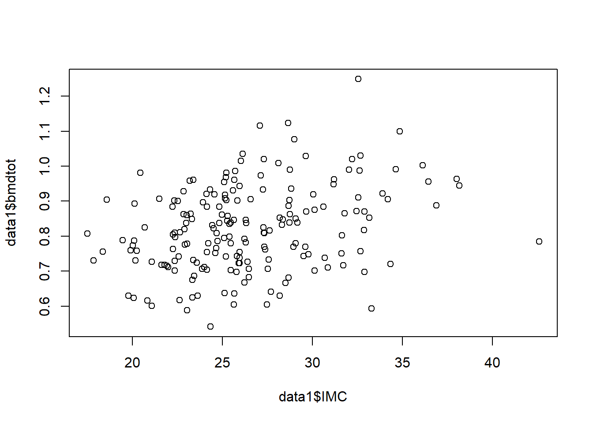
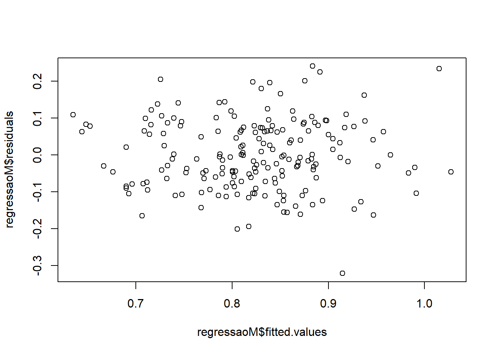
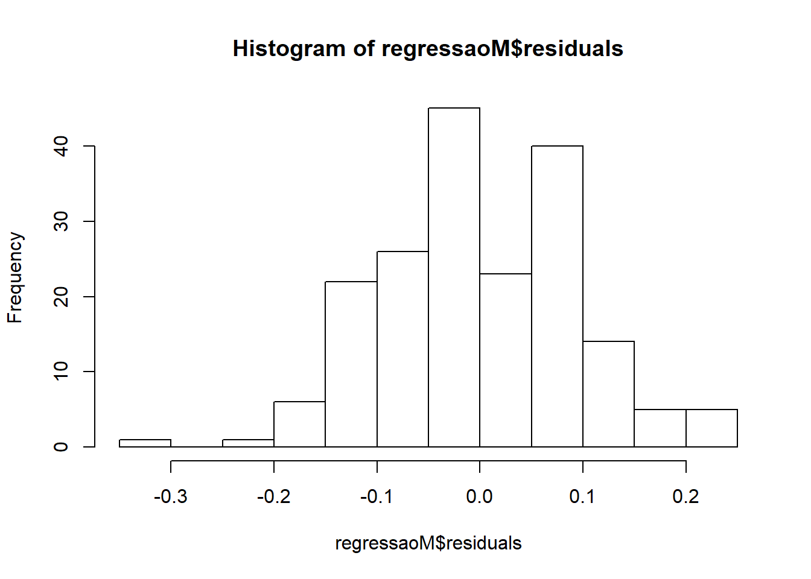
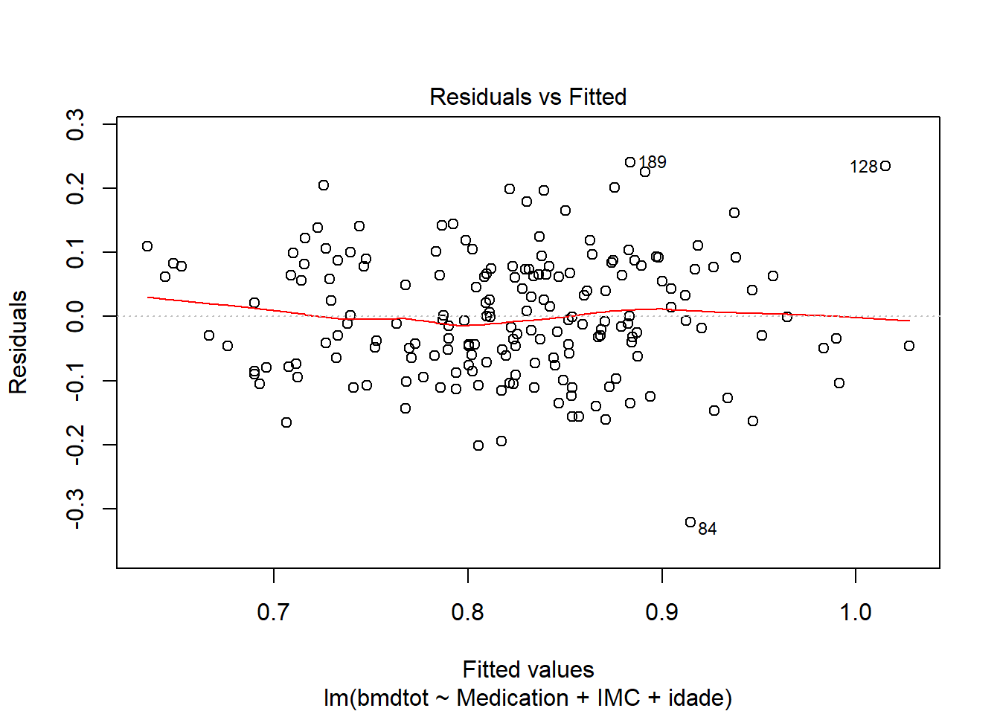
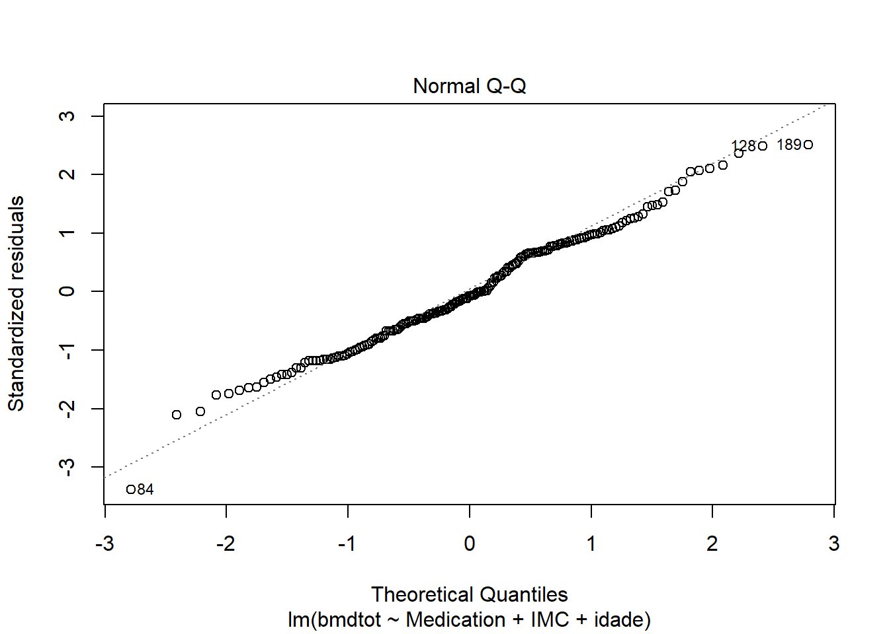
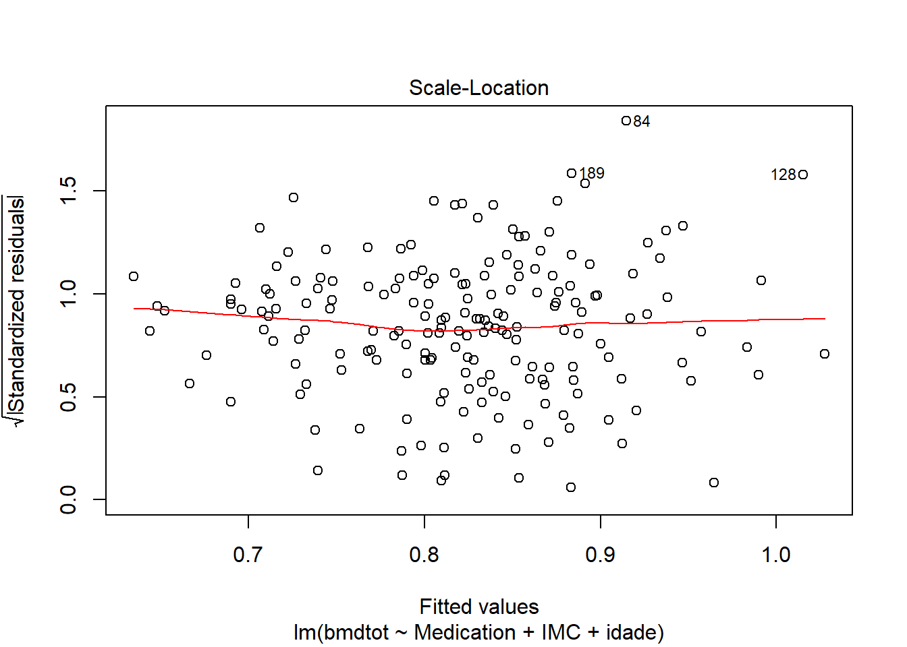
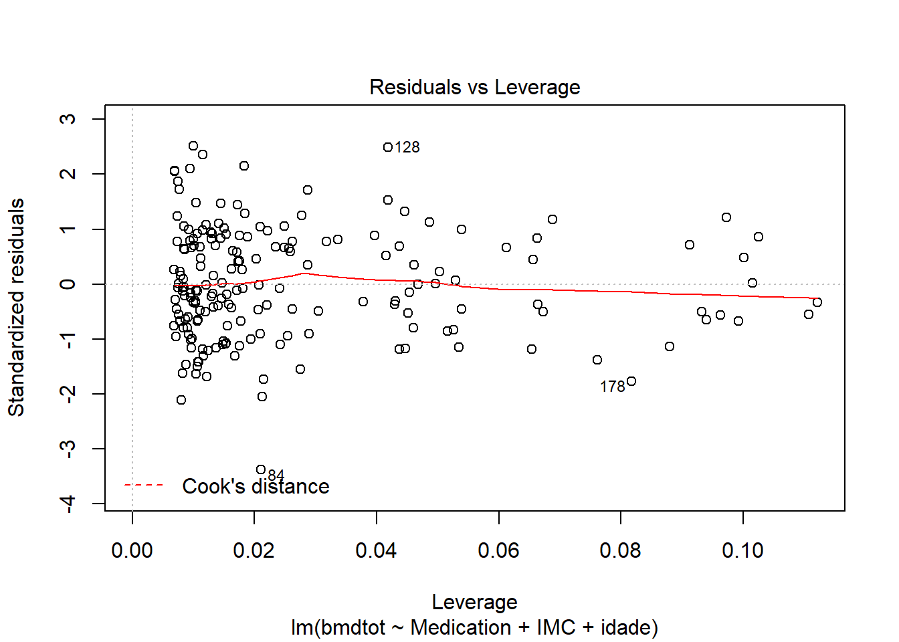

3.1 Logistic Regression
2020-02-03
exercise 1 The BMD_weight.sav database contains 190 densitometry records.
- Calculate the body mass index.
- Calculate the mean and standard deviation of total bone mineral density
## [1] 26.42143## [1] 4.299248- Analyze the relationship between bone mineral density and BMI using linear regression.

##
## Pearson's product-moment correlation
##
## data: data1$IMC and data1$bmdtot
## t = 4.4216, df = 186, p-value = 0.00001664
## alternative hypothesis: true correlation is not equal to 0
## 95 percent confidence interval:
## 0.1729248 0.4324277
## sample estimates:
## cor
## 0.3084029##
## Call:
## lm(formula = bmdtot ~ IMC, data = data1)
##
## Residuals:
## Min 1Q Median 3Q Max
## -0.28807 -0.07629 -0.00038 0.08273 0.37375
##
## Coefficients:
## Estimate Std. Error t value Pr(>|t|)
## (Intercept) 0.593934 0.052316 11.353 < 0.0000000000000002 ***
## IMC 0.008639 0.001954 4.422 0.0000166 ***
## ---
## Signif. codes: 0 '***' 0.001 '**' 0.01 '*' 0.05 '.' 0.1 ' ' 1
##
## Residual standard error: 0.1155 on 186 degrees of freedom
## (2 observations deleted due to missingness)
## Multiple R-squared: 0.09511, Adjusted R-squared: 0.09025
## F-statistic: 19.55 on 1 and 186 DF, p-value: 0.00001664- Compare the BMDTOT average according to the type of medication, adjusting for BMI and age.
- Check the assumptions for the model used in d).


or we can plot everything

exercise 2 The data in the score2013.sav file refer to 1768 admissions to pediatric intensive care units in several Portuguese hospital units.
- The minimum systolic tension of the first 12 hours of hospitalization and mechanical ventilation at some point in the first hour of hospitalization are potential predictors of mortality in the ICU.
| Length | Class | Mode | |
|---|---|---|---|
| sexo | 1768 | factor | numeric |
| peso | 1768 | factor | numeric |
| outcome | 1768 | factor | numeric |
| apneia | 1768 | factor | numeric |
| ventil | 1768 | factor | numeric |
| hmedica | 1768 | factor | numeric |
| CPAP | 1768 | factor | numeric |
| Pupil | 1768 | factor | numeric |
| TAS12 | 1768 | factor | numeric |
| temp12 | 1768 | factor | numeric |
| entub | 1768 | factor | numeric |
Study the individual association of each of them with mortality first.
data2$TAS12 <- as.numeric(factor(data2$TAS12))
logistic1 <- glm(outcome ~ TAS12, data = data2, family = "binomial")
logistic2 <- glm(outcome ~ ventil, data = data2, family = "binomial")
summary(logistic1)##
## Call:
## glm(formula = outcome ~ TAS12, family = "binomial", data = data2)
##
## Deviance Residuals:
## Min 1Q Median 3Q Max
## -1.1116 -0.3953 -0.2934 -0.2225 3.0054
##
## Coefficients:
## Estimate Std. Error z value Pr(>|z|)
## (Intercept) -0.054551 0.215283 -0.253 0.8
## TAS12 -0.051158 0.004748 -10.776 <0.0000000000000002 ***
## ---
## Signif. codes: 0 '***' 0.001 '**' 0.01 '*' 0.05 '.' 0.1 ' ' 1
##
## (Dispersion parameter for binomial family taken to be 1)
##
## Null deviance: 948.95 on 1767 degrees of freedom
## Residual deviance: 825.01 on 1766 degrees of freedom
## AIC: 829.01
##
## Number of Fisher Scoring iterations: 6##
## Call:
## glm(formula = outcome ~ ventil, family = "binomial", data = data2)
##
## Deviance Residuals:
## Min 1Q Median 3Q Max
## -0.4776 -0.4776 -0.3022 -0.3022 2.4936
##
## Coefficients:
## Estimate Std. Error z value Pr(>|z|)
## (Intercept) -3.0634 0.1617 -18.940 < 0.0000000000000002 ***
## ventilSim 0.9500 0.1952 4.868 0.00000113 ***
## ---
## Signif. codes: 0 '***' 0.001 '**' 0.01 '*' 0.05 '.' 0.1 ' ' 1
##
## (Dispersion parameter for binomial family taken to be 1)
##
## Null deviance: 948.95 on 1767 degrees of freedom
## Residual deviance: 923.16 on 1766 degrees of freedom
## AIC: 927.16
##
## Number of Fisher Scoring iterations: 5| OR | 2.5 % | 97.5 % | |
|---|---|---|---|
| (Intercept) | 0.9469106 | 0.6185266 | 1.4405861 |
| TAS12 | 0.9501285 | 0.9411981 | 0.9589037 |
| OR | 2.5 % | 97.5 % | |
|---|---|---|---|
| (Intercept) | 0.046729 | 0.0334873 | 0.0632424 |
| ventilSim | 2.585604 | 1.7772140 | 3.8273766 |
Then test the interaction of these two variables and interpret the results.
logistic3 <- glm(outcome ~ ventil + TAS12 + ventil * TAS12, data = data2, family = "binomial")
summary(logistic3)##
## Call:
## glm(formula = outcome ~ ventil + TAS12 + ventil * TAS12, family = "binomial",
## data = data2)
##
## Deviance Residuals:
## Min 1Q Median 3Q Max
## -1.2779 -0.3739 -0.2875 -0.2301 3.0171
##
## Coefficients:
## Estimate Std. Error z value Pr(>|z|)
## (Intercept) -1.323763 0.464494 -2.850 0.004373 **
## ventilSim 1.669344 0.529036 3.155 0.001603 **
## TAS12 -0.031758 0.008677 -3.660 0.000252 ***
## ventilSim:TAS12 -0.024409 0.010569 -2.310 0.020914 *
## ---
## Signif. codes: 0 '***' 0.001 '**' 0.01 '*' 0.05 '.' 0.1 ' ' 1
##
## (Dispersion parameter for binomial family taken to be 1)
##
## Null deviance: 948.95 on 1767 degrees of freedom
## Residual deviance: 811.29 on 1764 degrees of freedom
## AIC: 819.29
##
## Number of Fisher Scoring iterations: 6| OR | 2.5 % | 97.5 % | |
|---|---|---|---|
| (Intercept) | 0.2661319 | 0.1024458 | 0.6380664 |
| ventilSim | 5.3086860 | 1.9349881 | 15.5012115 |
| TAS12 | 0.9687412 | 0.9524027 | 0.9854715 |
| ventilSim:TAS12 | 0.9758865 | 0.9557194 | 0.9962234 |
- Using all the variables in the database, build a model for mortality and study the model’s discrimination and calibration.
accuracy
pred<-predict(logistic3, type = "response")
pred01<-ifelse(pred<0.5, 0, 1)
table(pred01,data2$outcome)| pred01/ | Vivo | Falecido |
|---|---|---|
| 0 | 1624 | 121 |
| 1 | 10 | 13 |
## [1] 0.925905AUC

Goodness of fit test
##
## Hosmer and Lemeshow goodness of fit (GOF) test
##
## data: data2$outcome, pred01
## X-squared = 1768, df = 8, p-value < 0.00000000000000022